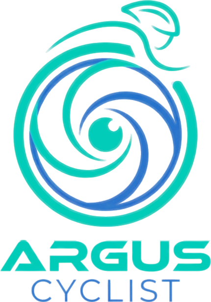
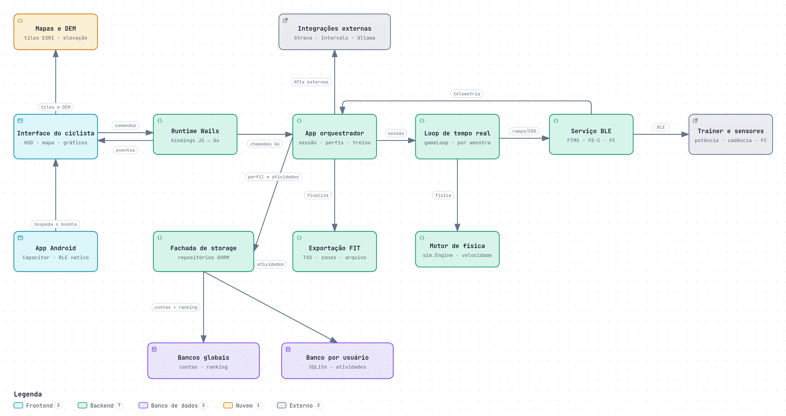
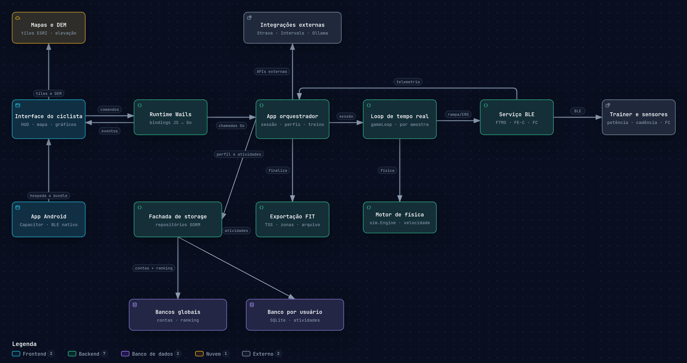

CarreiraPMC e desacoplamento
Um ecossistema multiplataforma e de código aberto para o ciclismo virtual

Quanto trabalho o ciclista produz. É a grandeza central do treino.
Como o corpo responde a esse trabalho.
Ritmo das pedaladas.
Vem do mapa do percurso; o rolo endurece na subida.
app de rota
app de treino
app de análise
planilha
cada troca de app separa o percurso do dado
assinaturas em dólar/euro: US$ 19,99/mês (Zwift), € 19,99/mês (Rouvy)
métricas como TSS e PMC sem fórmula ou parâmetro explícitos
| Plataforma | GPX do usuário | Controla o rolo | Análise fisiológica | Histórico local | Código aberto |
|---|---|---|---|---|---|
| Zwift | |||||
| Rouvy | |||||
| Biketerra | |||||
| TrainingPeaks Virtual | |||||
| GoldenCheetah | |||||
| Incyclist | |||||
| Argus Cyclist |
Contribuição: integração e transparência — não pioneirismo em cada função.
Ensaiar o percurso de uma prova antes de ir.
Pedalar um lugar que talvez nunca visite.
Treinar com carga fisiológica mensurável.
Código aberto (GPLv3) · dados no dispositivo · integrações (Strava, Intervals.icu) opcionais
305 commits · núcleo e INPI → análise e treino → Android e IA local
Processo BR512026003786-7 · linha de base do artefato
Próprio autor, rolo e sensores reais · sem inferência estatística


Os perfis GATT de ciclismo não autenticam a origem dos dados: um dispositivo — ou um app que emule um sensor — pode anunciar o mesmo serviço e enviar qualquer potência. Esse risco de fraude é o tema do Argus Recon, outro projeto do autor.
Mapa suaviza a câmera a cada 150 ms: fluidez da tela ≠ taxa de aquisição.
Entre pontos vizinhos: rampas de até 17,9% e muito ruído. Janela de ±5 pontos e limite de ±25%: a curva que vai para o rolo.
Equação de Martin (quase estática), resolvida por bisseção:
η·P = ½ρCdA·v³ + m·g·(Crrcosθ + sinθ)·v
Velocidade a 200 W, 84 kg · mesmas constantes e algoritmo do motor Go
| Potência média | 96 W | medido |
| NP (média⁴ de 30 s) | 106 W | calculado |
| IF · TSS (FTP 153 W) | 0,69 · 49 | calculado |
| FC média · máx | 139 · 169 | medido |
| Desacoplamento (Pw:FC) | 8,3% | calculado |
| Recuperação da FC (1 · 2 min) | 26 · 28 | calculado |
| VT1 / VT2 | — | anotação |
Limiares são marcados pelo usuário; o teste de 5 min é proxy de potência aeróbia, não mede VO₂máx; zonas de FC por % da máxima.


| Funcional | Status |
|---|---|
| RF01 · importar GPX e derivar inclinação | verificado |
| RF02 · controlar o rolo pela inclinação | verificado |
| RF03 · registrar potência, FC e cadência | verificado |
| RF04 · NP, IF, TSS, TRIMP, PMC, HRR, Pw:FC | implementado¹ |
| RF05 · histórico local por perfil | verificado |
| RF06 · exportar FIT e integrações | verificado em amostra |
| RF07 · desktop e Android | verificado |
| RF08 · fluxo de reconhecimento | demonstrado |
| Não funcional | Status |
|---|---|
| RNF01 · processamento local, sem nuvem obrigatória | atendido² |
| RNF02 · interface responsiva (telas pequenas) | atendido |
| RNF03 · código aberto (GPLv3) | atendido |
| RNF04 · integridade e recuperação de sessão | atendido |
| RNF05 · fórmulas e limites explícitos | atendido |
| Plataforma | Situação |
|---|---|
| Windows · Linux | fluxo completo |
| Android (telefone) | sessão ao vivo |
| macOS · iOS · tablet | preparado · não validado |
Do GPX à análise fisiológica, em um único artefato aberto, com o dado no dispositivo.


ANT+ ALLIANCE. ANT+ Fitness Equipment Control (FE-C) Profile. 2024.
BANISTER, E. W. Modeling elite athletic performance. In: MACDOUGALL, J. D. et al. (ed.). Physiological Testing of the High-Performance Athlete. Champaign: Human Kinetics, 1991. p. 403–424.
BLUETOOTH SIG. Fitness Machine Service (FTMS) Specification v1.0. 2017.
BLUETOOTH SIG. Bluetooth Core Specification, version 5.4. 2023.
COGGAN, A.; ALLEN, H. Training and Racing with a Power Meter. 2. ed. Boulder: VeloPress, 2010.
GARMIN. FIT SDK (Flexible and Interoperable Data Transfer). 2024.
HEVNER, A. R. et al. Design science in information systems research. MIS Quarterly, v. 28, n. 1, p. 75–105, 2004.
KLEPPMANN, M. et al. Local-first software: you own your data, in spite of the cloud. In: ONWARD! 2019. ACM, 2019. p. 154–178.
MARTIN, J. C. et al. Validation of a mathematical model for road cycling power. Journal of Applied Biomechanics, v. 14, n. 3, p. 276–291, 1998.
MARTIN, R. C. Clean Architecture: a craftsman’s guide to software structure and design. Boston: Prentice Hall, 2017.
PEFFERS, K. et al. A design science research methodology for information systems research. Journal of Management Information Systems, v. 24, n. 3, p. 45–77, 2007.
TOPOGRAFIX. GPX: GPS Exchange Format v1.1. 2004.